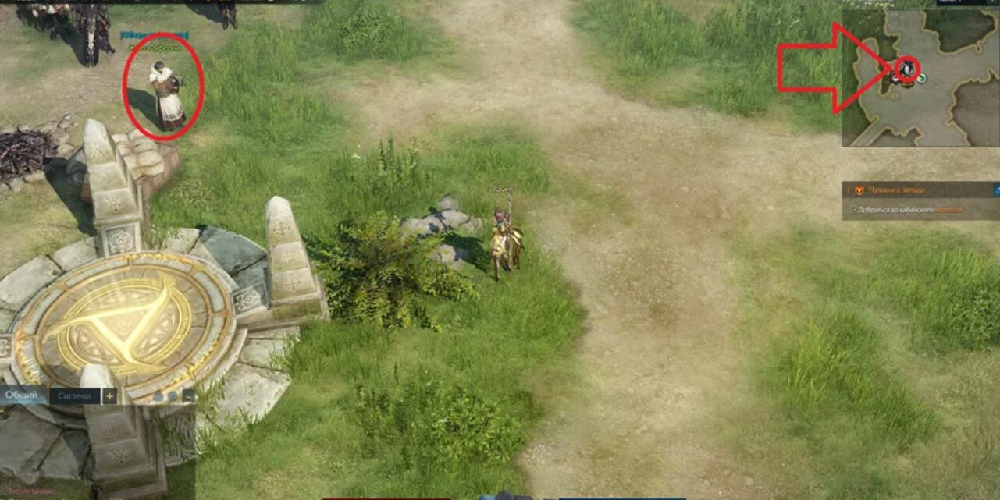
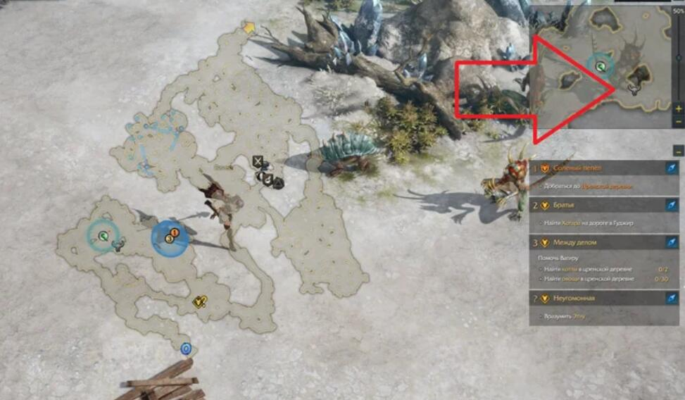
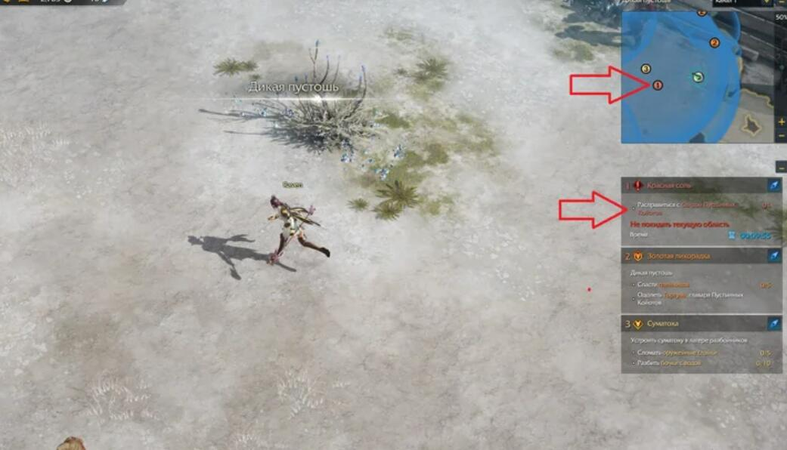
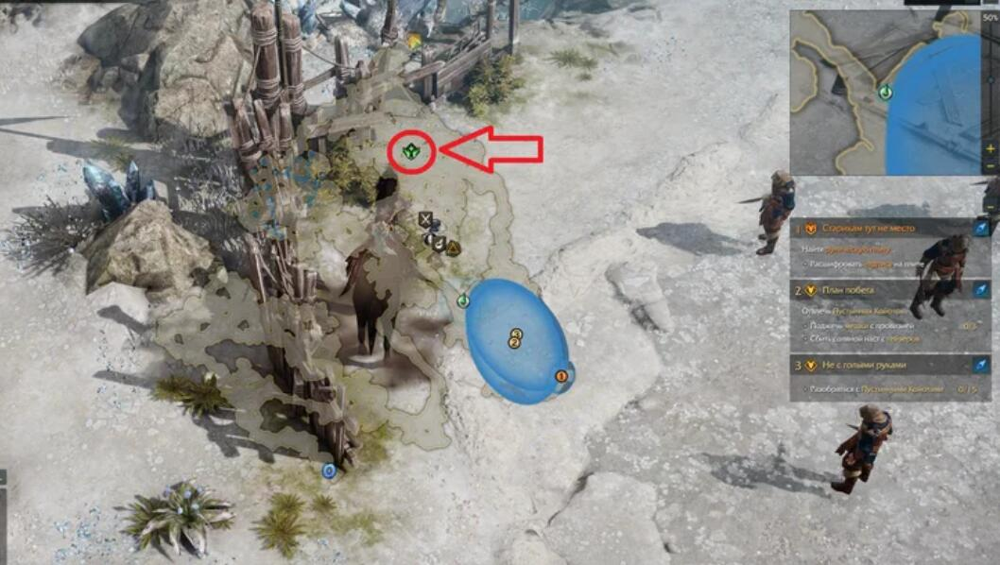

(
(
How to Get Lost Ark EndGame Tier 3 Gears?
Tier 3 gear in LOST ARK is one of the initial ways to outfit your character with purple gear. In this guide, we will touch on some of the subtleties of its extraction and tell you how not to waste valuable resources in vain.
Where to buy Tier 3 equipment?
After you open the city of Leonhold and advance further in the story, you will encounter Tier 3 gems. This resource is necessary for the purchase of Tier 3 equipment. The exchange of Tier 3 takes place at unique NPCs - Priests of Rufen. The first one can be found in The Silent Hills. They are displayed on the map using a particular sign:

The first priest you meet can offer you level 120 equipment. You will need a lot of Tier 3, and you can get them in numerous ways.
How to get Tier 3?
Completing story and side missions
Periodically, Tier 3 Gear and Lost Ark Gold will appear as a reward for completing various tasks given by NPCs. If you find such quests, be sure to meet them.
Killing elite monsters

During the passage of the storyline, you will constantly stumble upon elite monsters. They are not tricky opponents, but it is worth considering that other players are also hunting for them. Therefore, as soon as you notice the icon of an elite monster on the minimap, drop everything and run to kill before others deal with it.
Completing red missions

These tasks will also appear during the passage. You will spontaneously receive a notification, and a red mark will appear on the map. Head there and don't linger because the execution time is limited. The tasks are straightforward, and you can get a lot of Tier 3 for them.
Local Events

To participate in them, go to the point: then a massive time task will begin, in which progress is counted from the actions of all players. Very often, the destruction of various objects is entrusted. Try not to run near other players to find all the things quickly. You can also ignore monsters. Do not forget that if you do not fill the progress bar before the end of time, then the task will fail.
If you suddenly missed an event, wait a little time before it starts again. Before that, a gray marker with a countdown to the event's start will appear on the map.
World bosses
Under no circumstances should you miss them! When doing this, make sure that many players are fighting them. It is also advisable to have items for instant resurrection with you, as the fight will be extended, and the enemy can kill very quickly. At the end of the battle with the boss, a vast number of valuable things and items will fall out, among which there will be a large amount of Tier 3.
Other Tips on Tier 3 and Equipment
It would help if you did not waste time mining Tier 3 in starting locations. The fact is that the further you move along the plot, the more stones fall from different activities. If on the same Silent Hills 3-4 Tier 3 fall from elite monsters, then in the Salt Desert, this number will be more than 5.
Do not spend Tier 3 on starting equipment. At first, for example, on the same Silent Hills, you can do without level 120 equipment. And in the same Salt Desert, things are already sold at level 140. Therefore, if leveling is easy enough, do not spend Tier 3 on equipment that can be easily replaced with something similar and complimentary.